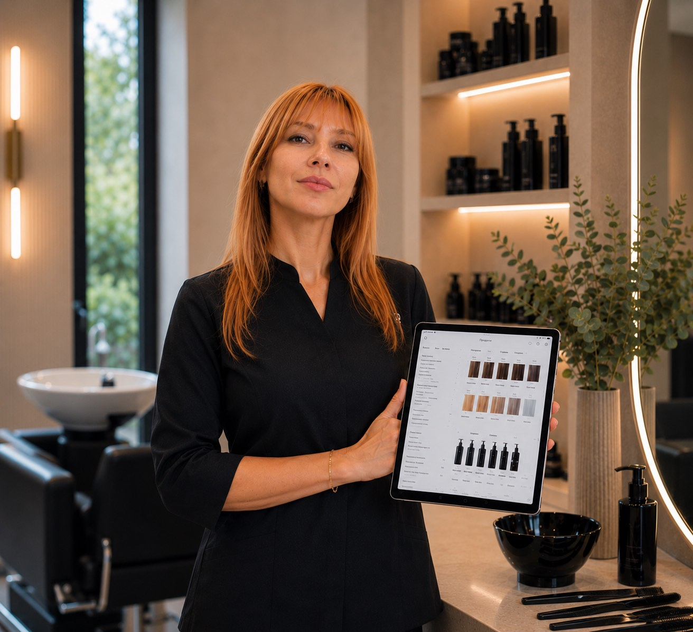
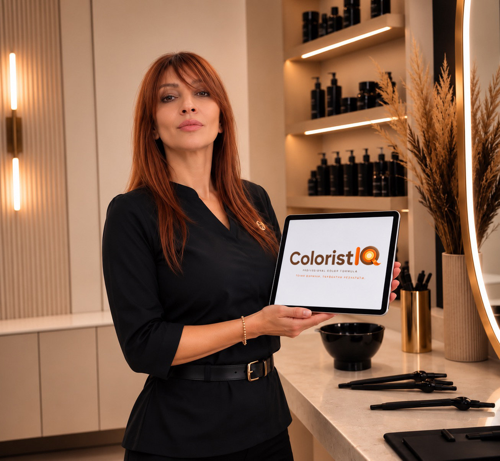

ColoristIQ ти помага да управляваш клиентите си, да пазиш историята им и да създаваш точни цветови формули, без тефтери, бележки и сметки на ръка.

При тест със 100 формули
99.8% точност
Защо ColoristIQ?
ColoristIQ изчислява с точност до грам необходимите количества и пропорции за всяко боядисване вместо теб.
Виж историята на клиента, формулите и резултатите му на едно място.
Wella, Schwarzkopf, L'Oréal и много други — всички в единна платформа без превключване. Можеш да създадеш формула и без да въвеждаш конкретна марка.
Телефон. Таблет. Компютър.
6 клиента. 4 формули. Календар. Клиентска история. Когато клиентите и формулите ти станат повече, премини към платената версия.
ColoristIQ е създаден от практикуващ колорист, с опит над 35 години - на твой език с локална поддръжка.
Историята зад продукта

Опит в бранша
35+ години
активна колористика
"Фризьорството не е просто професия. То е моят код за общуване със света."
Аз съм Любомира Кирилова Баталска. Пътят ми в света на косите започна преди повече от две десетилетия, когато прекрачих прага на първия си салон. Оттогава преминах през безброй обучения, стотици часове зад стола и хиляди усмивки на доволни клиенти.
Моята страст винаги е била колористиката – тази фина граница между науката за химичните процеси и изкуството да виждаш цветовете. Обучавала съм се при едни от най-големите световни имена и марки. Когато работиш с обсесия към съвършенството, светът те забелязва:
През всички тези години се сблъсквах с един и същ проблем: липсата на надежден, съвременен инструмент, който да ми помага да организирам своите формули и да следя историята на клиентите си. Тефтерите се губеха, листовете се късаха, а паметта... паметта понякога изневерява.
Така се роди идеята за Colorist IQ. Събрах своя 35-годишен опит, знанията си за нуждите на работещия колорист и най-добрите технологични практики, за да създам приложението, което винаги съм искала да имам. Colorist IQ е моят начин да споделя този опит с вас и да ви дам свободата да творите без ограничения и без страх от грешки.
Работа с клиенти
Тайната на успешните колористи
В света на бързо развиващата се козметична индустрия успешните колористи не само следят трендовете — те работят с инструменти, кoито ги правят по-ефективни. Според Professional Beauty Association, салоните, които въвеждат дигитални инструменти за управление на формули и клиенти, увеличават задържането на клиенти с над 30%?
ColoristIQ замества тефтерите, WhatsApp бележките и ръчните изчисления с една интелигентна платформа, проектирана специално за колористи.
Когато спрете да губите време в чудене "Какво точно сложих миналия път?", вие освобождавате пространство за истинско творчество и безупречно обслужване. Избягването на метода "проба-грешка" не само спасява косите на клиентите ви, но и гради доверие, което ги кара да се връщат отново и отново.
2 ч
спестени на ден
99.8%
точност при тест със 100 формули
Прости и прозрачни
Започни с това, което ти е нужно. Надгради, когато пораснеш.
Старт
Всичко необходимо, за да започнеш с ColoristIQ.
Без карта. Без договор. Без риск.
Надгради до ПРО, когато клиентите и формулите ти станат повече.
Про
при годишно плащане
За колористи, които искат ColoristIQ да стане част от ежедневната им работа.
120 € еднократно за 12 месеца
Спестяваш загуба от 60 € на година.
Имате въпроси?
Можеш да продължиш да използваш съществуващите профили, а за добавяне на нови клиенти е необходимо да преминеш към Pro.
Можеш да използваш и запазваш съществуващите формули, а за генериране на нови е необходимо да преминеш към Pro.
Да. Можеш да надградиш към Pro по всяко време, без да прекъсваш работата си (без да губиш вече създадените профили на клиенти и формули).
Не. Всички твои клиенти, история и формули се запазват.
Не. Добавяш клиентите постепенно, когато имаш нужда от тях.
Изобщо не. Приложението е разработено специално за колористи без технически опит. Ако можеш да ползваш WhatsApp, можеш да ползваш ColoristIQ.
Всичките ти данни се пазят безопасно в облака. Влез от всяко устройство и всичко ще бъде точно там, където го оставил. Нищо не се губи при смяна на устройство.
ColoristIQ е инструмент за подпомагане, не за заместване. Твоята експертиза е незаменима — приложението само прави работата ти по-лесна, по-бърза и по-точна. Ти вземаш крайните творчески решения.
Започни с това, което ти е
нужно.
Надгради, когато пораснеш.